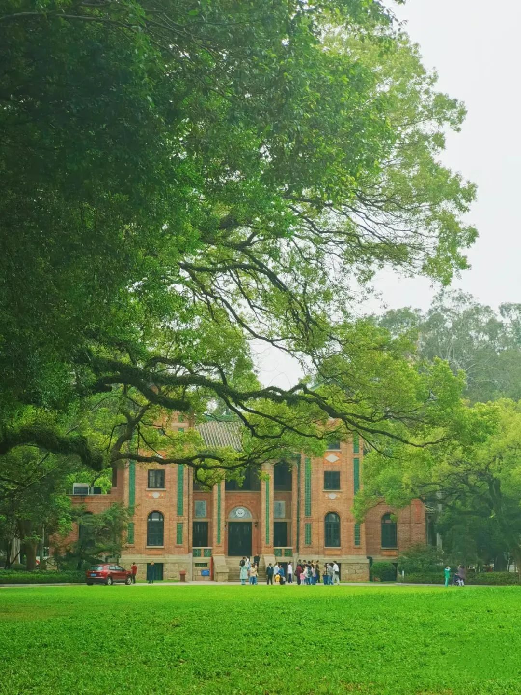

漫漫长道 独忆白雪 _ 长亭忆雪
跨越山海 终见曙光 轻舟已过万重山！
欢迎来到我的个人网站,一位来自太阳系的神秘人,闲暇之余建立了我的小站.

在这个小站上,我分享了我的思考、创作和探索的成果.在业余时间,我热爱阅读经典著作和探索新的文学领域,也喜欢在自然中寻找灵感和启发. 我追求简约和宁静的生活方式,认为它们有助于我保持内心的平静和专注.我的写作风格强调对细节的关注和对语言的尊重.我努力通过精确的用词和有力的表达来传达我的思想和情感. 我的文字是我在世界中的见证和探索,是我对生活和人类经验的思考和感悟.在这个网站上,您将发现我的文字富有诗意和感性的色彩,同时也蕴含着深刻的思想和哲理. 我希望这些文字能触动您的心灵,并带给您一些启示和灵感.如果您有任何问题或建议,请随时通过我的联系信息与我联系.感谢您访问我的个人网站,期待与您一起分享和交流.
没有最好的,只有适合自己的,愿每个人都能在所学中尽情努力!
未来的某一刻,
当你回忆这段时光时,
没有给自己留下太多遗憾,
无愧于心,无负青春.